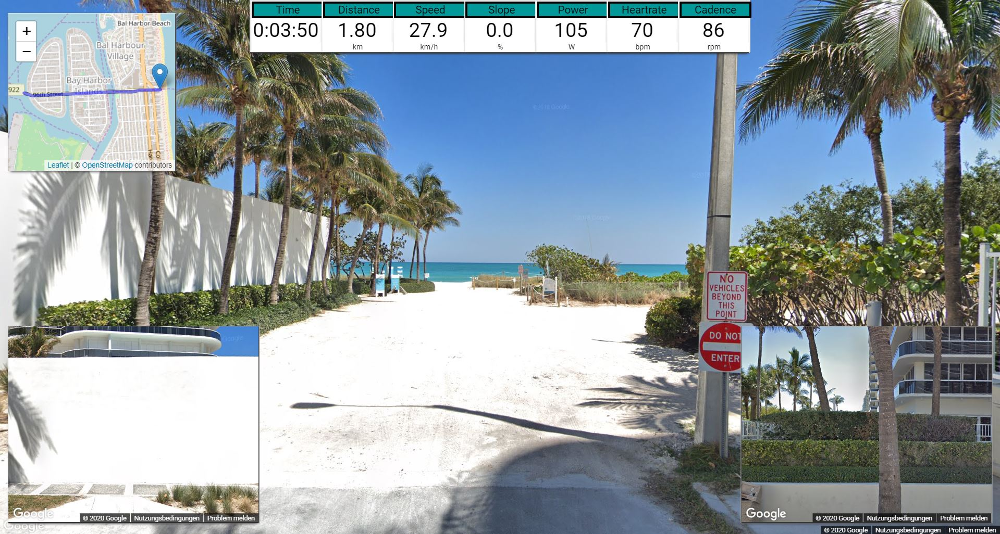

Our story
Built for the freedom of the ride.
Incyclist grew from one rider's search for a more open, realistic way to cycle indoors.
I'm Guido Doumen, a triathlete and enthusiast cyclist living in Germany, and the developer behind Incyclist.
A few years back I got a Daum 8008 ergo bike and started to experiment with indoor cycling. As many cyclists, I soon realized that indoor biking can become pretty boring, so I looked around for some good apps — and found an app called Ergoplanet, which I really liked and used for some time. Unfortunately, that app was stopped to be supported in 2016. Its old domain has since been taken over by an unrelated site, so it is deliberately not linked here.
So I looked for some alternatives. The obvious alternatives (Zwift) were not supporting my ergo bike and others were not really looking promising.
So, I decided to write my own free indoor cycling app, initially supporting my Daum ergo bike and later to support for ANT+, BLE and Direct Connect.
Today Incyclist runs on Windows, macOS, Linux, Android and iOS, and it is still free. If you would like to try it, head to the download page.
